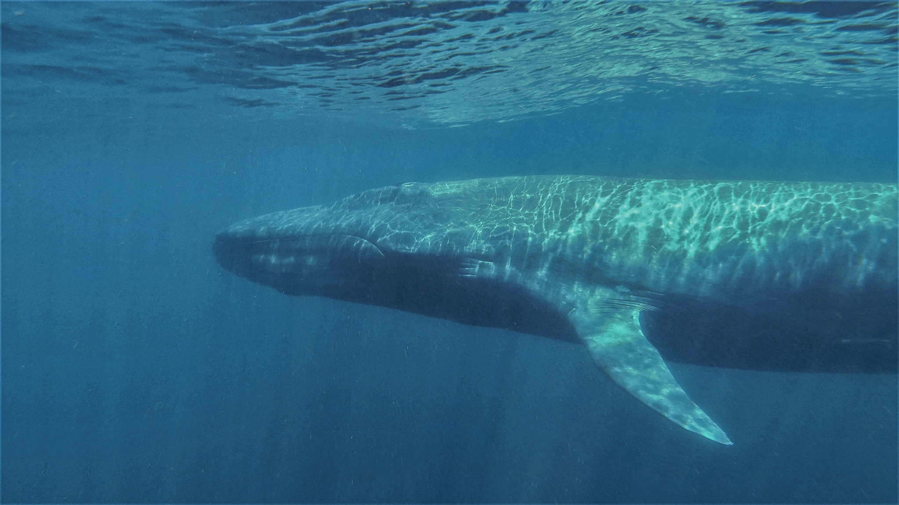
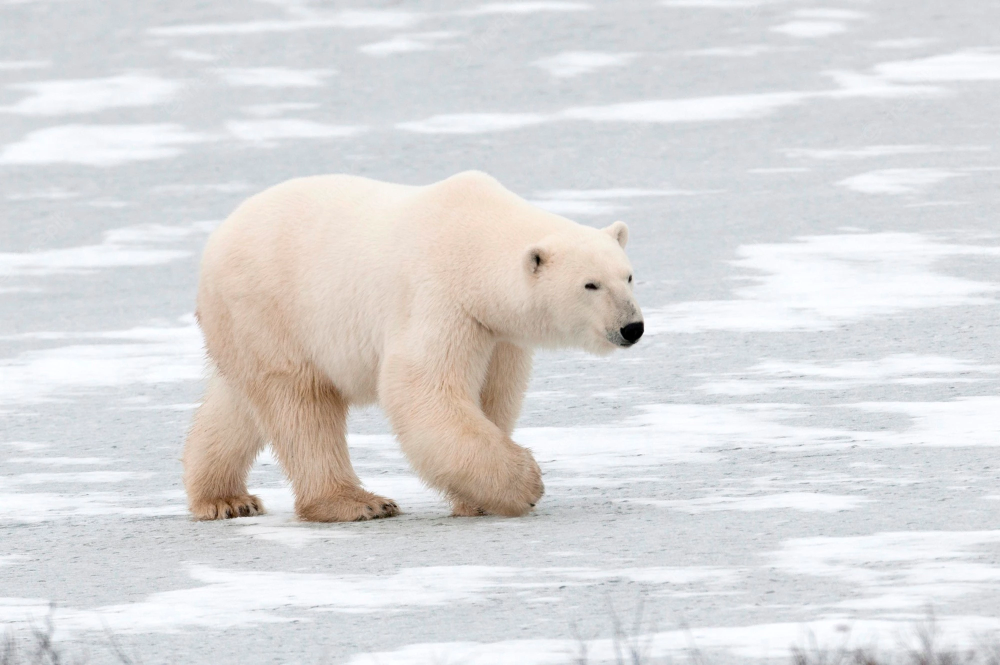

Extinção
Entender o conceito de extinção de espécies é uma tarefa relativamente simples: extinção é o desaparecimento de todos os indivíduos de uma determinada espécie. Difícil é entender o porquê do desaparecimento de todos esses indivíduos.
Para entendermos esse porquê podemos estudar por meio da evidência fóssil. A partir dos fósseis, obtêm-se informações sobre organismos que viveram em tempos muito distantes dos atuais, nos levando a entender um pouco mais da diversidade da vida no passado.
Apesar da grande diversidade biológica que existe, estima-se que cerca de 99% das espécies existentes na Terra já se tenham tornado extintas. Um dos maiores enigmas dos paleontólogos consiste em descobrir e explicar como se processaram os eventos de extinção no passado e quais foram as suas causas.
Atualmente os processos de extinção estão ocorrendo principalmente em decorrência da ação antrópica. Os seres humanos frequentemente destroem o habitat das espécies, diminuem sua população com a caça predatória e afetam diretamente os seres vivos com sua poluição e contaminação do ambiente e inserção de espécies em novas áreas. Além desses fatores, as alterações climáticas existentes, que prejudicam um grande número de espécies, têm relação direta com as atitudes do homem.
As extinções podem ocorrer de três maneiras diferentes: a extinção filética, de fundo ou em massa. A extinção filética, também chamada de pseudoextinção, ocorre quando acontecem mudanças gradativas nas espécies ao longo do tempo que as tornam diferentes das populações originais, sendo consideradas, portanto, uma nova espécie.
As extinções de fundo ocorrem em decorrência da interação normal entre as espécies e destas com o meio. Como exemplo, podemos citar uma espécie que ocupa o mesmo nicho ecológico que outra. Por estarem necessitando de um mesmo recurso, a competição entre elas poderá levar uma das espécies à extinção.
Já as extinções em massa são caracterizadas pela destruição de um número elevado de espécies em pouco período de tempo. Dentre as extinções em massa mais conhecidas,destaca-se a do Cretáceo-Terciário,que levou ao fim dos dinossauros.
Estima-se que 99% de todas as espécies que já existiram na Terra hoje estão extintas. Um número chocante, mas mais impressionante que isso é saber que essas espécies não foram sumindo aos poucos ao longo da história. Pelo contrário: as extinções foram concentradas em períodos relativamente curtos, em que grandes porcentagens de toda a vida existente sumiram em apenas alguns milhões de anos (o que, na linha do tempo da Terra, é muito pouco).
Um desses eventos de “extinção em massa” é bastante famoso: aquele causado pelo asteroide que acabou com (quase todos) os dinossauros. Mas esse episódio está longe de ser o único ou o mais letal da história – ao todo, pelo menos cinco eventos de extinção em massa aconteceram na Terra (veja todos no final desta matéria).
Já faz algum tempo que diversos cientistas vêm argumentando que a sexta extinção em massa está ocorrendo agora, no momento em que você lê esse texto. Não faltam evidências que mostram que o número de espécies extintas no Holoceno (o período atual que vivemos, que começou há cerca de 11 mil anos) está cada vez mais próximo do número de extinções dos eventos em massa citados – tudo por conta da ação da humanidade.
Só no século 20, por exemplo, centenas de espécies se foram para sempre, e, para as próximas décadas, a ONU afirma que quase um milhão de espécies de animais e plantas estão ameaçadas de extinção em algum grau por conta de atividades humanas. Em 2015, um estudo publicado na revista Science compilou evidências como essa para bater o martelo e chegar em uma conclusão bem aceita na comunidade científica: tudo indica que estamos de fato vivendo uma extinção em massa.
Acelerando a extinção
Agora, um novo estudo da mesma equipe não só reafirma a ideia como mostra que as extinções estão acontecendo ainda mais rápido do que se previa anteriormente. Ou seja: o fenômeno está acelerado. A equipe da Universidade de Stanford e da Universidade Nacional Autônoma do México usou 29.400 espécies de vertebrados terrestres como um indicador da velocidade das extinções que estamos vivendo. Deste total, 515 se encaixam no conceito de “à beira da extinção” (quando há menos de mil representantes da espécie vivos no mundo atualmente). Desse grupo, cerca de metade conta com menos de 250 espécimes vivos, o que é ainda mais grave.
Usando dados de 77 espécies de mamíferos e pássaros que estão no grupo de seriamente ameaçadas, os pesquisadores descobriram que 94% de todas as populações dessas espécies sumiram no último século. Generalizando essa porcentagem para as outras espécies do grupo de maior risco, eles estimaram mais de 237 mil populações desses animais sumiram desde 1900.
Supondo que essas espécies em alto risco só sobrevivam por mais algumas décadas, e somando essas espécies com as 543 de vertebrados já extintas no século 20, um total de 1.508 espécies de vertebrados terrestres estarão extintas até 2050. Calcula-se que, em condições normais, apenas nove espécies do tipo seriam extintas naturalmente. Ou seja, a taxa de extinção do período 1900-2050 será 117 vezes maior do que a taxa de extinção esperada. Um número tão grande em tão pouco tempo só é observado em eventos de extinção em massa.
O problema é ainda pior se colocarmos na conta as 388 espécies que possuem entrem 1.000 e 5.000 representantes vivos. O número de espécimes vivos é um pouco maior, mas a situação delas não é exatamente confortável. Além disso, 84% dessas espécies vivem nas mesmas regiões das 515 citadas anteriormente, que estão sob altíssimo risco de extinção – o que piora tudo. Isso porque, quando se trata de extinções, há de se considerar o efeito cascata: o sumiço de uma espécie prejudica as relações ecológicas de todo um habitat, e isso facilita que outras espécies também sigam pelo mesmo caminho.
"Interações ecológicas de espécies à beira da extinção tendem a levar outras espécies à aniquilação quando desaparecem” – ou seja, a extinção gera extinções, explicam os pesquisadores no estudo. Um exemplo claro disto é o da “vaca-marinha-de-steller”, uma espécie de mamífero marinho que foi extinto no século 18 devido à diminuição do número de lontras marinhas no mar de Bering por conta da ação de caçadores humanos.
Acontece que as lontras marinhas eram predadoras de ouriços-do-mar, que prosperaram quando elas sumiram. Os ouriços, por sua vez, se alimentavam de vegetação marinha, assim como as vacas de steller. Elas não conseguiram competir com o grande número de ouriços e acabou sendo extinta.
Engana-se quem pensa que o problema está só nos animais selvagens. A equipe lembrou que nossa relação com a natureza também será profundamente afetada caso tantas espécies sumam tão rapidamente. O estudo cita a atual pandemia de Covid-19 como uma consequência direta de nossa relação conturbada com a vida animal – afinal, é quase certo que o vírus chegou aos humanos graças ao comércio ilegal de animais selvagens.
Com isso, a extinção em massa atual é comparável com fenômenos como o aquecimento global em termos de riscos à humanidade, e “pode ser a ameaça ambiental mais séria contra a sobrevivência da civilização, porque é irreversível”, como escrevem.
No entanto, os cientistas afirmam que não é tarde demais para agir. “O modo como lidamos com a atual crise de extinção nas próximas duas décadas definirá o destino de milhões de espécies”, diz Gerardo Ceballos, um dos autores do estudo. Algumas medidas sugeridas na pesquisa incluem forte proibição e fiscalização do comércio de espécies silvestres, diminuição imediata do desmatamento e categorização de todas as populações animais com menos de 5 mil indivíduos como “criticamente ameaçadas”.
Outras extinções em massa
Ordoviciano-Siluriano (443 milhões de anos atrás)
Foi o segundo maior evento de extinção da história em termos de porcentagem de espécies perdidas. Na época, toda a vida do mundo era marinha, e estima-se que 85% das espécies sumiram – corais e os chamados trilobitas foram especialmente afetados. O evento provavelmente foi causado por movimentos tectônicos que levaram à glaciação e queda no nível do mar.
Devoniano (383-359 milhões de anos atrás)
Em 20 milhões de anos, 75% das espécies existentes na Terra foram extintas, o que faz deste o terceiro maior evento de extinção conhecido. Novamente, os mais afetados foram os seres marinhos, incluindo os primeiros peixes primitivos. As causas ainda são debatidas, mas acredita-se que uma queda da oxigenação nas águas devido a asteróides e/ou fenômenos de vulcanismo criou um ambiente bastante inóspito à vida.
Permiano-Triássico (250 milhões de anos atrás)
A “mãe de todas as extinções em massa”, como o período é conhecido, foi o evento mais letal para a vida já registrado: 95% das espécies marinhas e 75% das terrestres desapareceram. O cataclisma foi causado pela erupção da rede de vulcões conhecida como “Trapps siberianos” no que hoje é a Rússia, liberando 14,5 trilhões de toneladas de gás carbônico na atmosfera, resultando num aquecimento global digno de ser categorizado como “infernal”.
Triássico-Jurássico (200 milhões de anos atrás)
De novo, erupções vulcânicas transformaram a Terra em um lugar nada agradável. Dessa vez, a culpada foi a Província Magmática do Atlântico Central, uma rede de vulcões que se concentrava no centro do continente da Pangeia (hoje, os remanescentes vulcões estão espalhados pela América e pela África devido à separação dos continentes).
Um fato curioso é que a extinção aniquilou várias espécies de répteis crocodilianos (parentes bem distantes dos crocodilos atuais), que dominavam o ambiente terrestre. Isso abriu espaço para os famosos dinossauros começarem a surgir e dominar o mundo como grandes predadores.
Cretáceo-Paleógeno (65 milhões de anos atrás)
A mais recente e famosa extinção em massa, que extinguiu todos os dinossauros não-aviários da Terra (sobraram apenas as espécies que, no futuro, dariam origem às aves modernas). O evento está quase certamente ligado à queda de um enorme asteroide na Península de Iucatã, no México.
Animais em risco de Extinção
Agora que sabemos um pouco sobre o que é extinção vamos ver alguns animais que estão em risco de acordo com a Lista Vermelha de Espécies Ameaçadas, da IUCN:
-
Coala (Phascolarctos cinereus): Os coalas estão classificados como vulneráveis. Atualmente,
a população desses animais está diminuindo.
-
Baleia-azul (Balaenoptera musculus): A baleia-azul está classificada como espécie em perigo.
Atualmente, sua população está aumentando.
 -
Urso-polar (Ursus maritimus): O urso-polar está classificado como vulnerável. Sua tendência
populacional atual é desconhecida.
 -
Kakapo (Strigops habroptilus ): Os kakapos são aves que estão classificadas como
criticamente
em perigo. Atualmente, de acordo com dados da IUCN, a população desses animais está aumentando.

-
Pinguim-africano (Spheniscus demersus): O pinguim-africano está classificado como em perigo.
Atualmente, sua população está diminuindo.
Animais em risco no Brasil
No Brasil, várias espécies também encontram-se ameaçadas de extinção ou, até mesmo, extintas no ambiente natural. Conheça a seguir algumas espécies ameaçadas de extinção e sua situação atual de acordo com a Lista Vermelha de Espécies Ameaçadas da IUCN:
-
Tamanduá-bandeira (Myrmecophaga tridactyla): O tamanduá-bandeira é um animal que está
classificado como vulnerável. Atualmente, a população de tamanduás-bandeira está diminuindo.

-
Ararinha-azul (Cyanopsitta spixii): A ararinha-azul está classificada como possivelmente
extinta na natureza. Atualmente, existem exemplares dessas aves criados em cativeiro.

-
Onça-pintada (Panthera onca): A onça-pintada está classificada como quase ameaçada de
extinção. Atualmente, observa-se um decréscimo nas populações desses animais.

-
Tatu-bola (Tolypeutes tricinctus): O tatu-bola, atualmente, está classificado como
vulnerável. Sua população também apresenta uma tendência de diminuição.

-
Mico-leão-dourado (Leontopithecus rosalia): O mico-leão-dourado é uma espécie classificada
como em perigo. Sua tendência populacional atual é considerada estável.

-
Ariranha (Pteronura brasiliensi): Atualmente, essa espécie encontra-se em perigo. Observa-se
que a população desses animais está diminuindo.
Animais já extintos
- Maçarico-esquimó (Numenius borealis) O maçarico-esquimó é uma espécie de ave que viveu nas pradarias norte-americanas e nos Pampas da América do Sul.Foi considerado extinto no ano de 1994, quando se teve os últimos registros.
- Limpa-folha-do-Nordeste (Philydor novaesi) O limpa-folha-do-Nordeste foi visto pela última vez no ano de 2011, quando foi considerado extinto. Endêmica da Mata Atlântica, essa ave era considerada de pequeno porte, pois possuía cerca de 20 cm de comprimento.
- Tartaruga gigante de Galápagos (Chelonoidis niger) O último exemplar da tartaruga gigante de Galápagos morreu no ano de 2012, onde vivia em cativeiro. Na natureza, a espécie já era considerada extinta há mais de 150 anos. Os animais desta espécie viviam por mais de 100 anos. Atualmente, pesquisadores do mundo todo realizam estudos para recuperar a espécie a partir da extração do DNA.
- Tigre-de-Java (Panthera tigris sondaica) Esta espécie de tigre foi nativo da Ilha de Java, na Indonésia, e foi extinto por volta do ano de 1994. As principais causas de sua extinção estão relacionadas a perda de seu habitat, ocasionada, sobretudo, pela expansão da agricultura.
- Mutum-do-Nordeste (Mitu mitu mitu) O mutum-do-Nordeste é uma ave nativa da Mata Atlântica e foi extinta da natureza nos anos 30, porém, atualmente ainda é possível encontrar algumas poucas espécies em cativeiro. As principais causas de sua extinção estão ligadas à caça e, sobretudo, à destruição de seu habitat para o plantio de cana-de-açúcar na região.